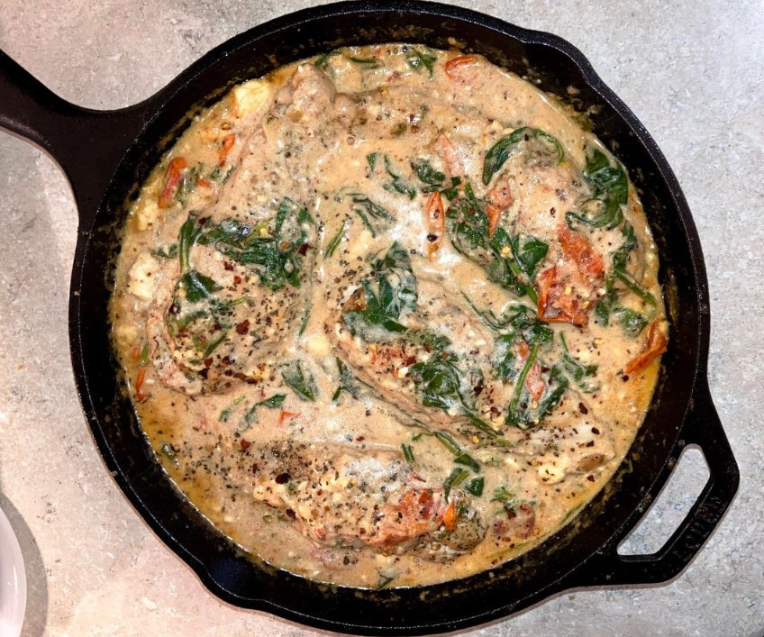

Cast Iron Chicken Breast with Creamy Spinach Tomato Feta Sauce

Ingredients
Chicken Breasts
Block of Feta Cheese
Cherry Tomatoes
Cream
Spinach
Olive Oil
Red Pepper Flakes
Dill
Salt & Pepper
Instructions
Preheat oven to 350
Heat up pan on stove
Add a splash of olive oil
Season chicken with salt & pepper and add to pan
Sear both sides until golden-brown crust forms
Place block of feta into center of pan
Add in cherry tomatoes into gaps
Add in another splash of olive oil
Sprinkle with dill and red pepper flakes
Put in oven for about 10-15 minutes
Chicken should be fully cooked and cheese melty
Remove chicken from pan and set aside
Add a splash of cream to pan and stir to make the sauce
For a thinner sauce you can add more cream
Add fresh spinach and put back into oven for a few minutes
Remove from oven and add chicken back to sauce
Can be served over pasta or with bread